Λέσβος 12/06/2017 15:28:38
Δευτέρα 12/6/2017, μια ακόμα συνηθισμένη ημέρα ξεκινά, με τους κατοίκους του παραδοσιακού οικισμού της Βρίσας Λέσβου να ακολουθούν την καθημερινή τους ρουτίνα, ασκώντας τις επαγγελματικές τους δραστηριότητες, που είναι κυρίως γεωργία και κτηνοτροφία.
Όλα κυλούν ήρεμα μέχρι και τις 15:27, ώρα που οι περισσότεροι κάτοικοι, έχοντας ολοκληρώσει τις εργασιακές τους υποχρεώσεις, έχουν πάρει το δρόμο της επιστροφής για το σπίτι τους, ενώ τα παιδιά παραμένουν στο σχολείο.
Η ηρεμία του παραδοσιακού οικισμού διαταράσσεται βίαια από την εκδήλωση ενός ισχυρού σεισμού μεγέθους 6,1 βαθμών, ο οποίος εκδηλώθηκε στις 15:28, 15 χλμ. νοτιοδυτικά του Πλωμαρίου Λέσβου, με εστιακό βάθος 12 χλμ.
Ο τραγικός απολογισμός του πολύ ισχυρού σεισμού ήταν ο θάνατος μιας ηλικιωμένης γυναίκας, παρά τις εκτεταμένες και σοβαρές ζημιές που προκάλεσε στα κτίρια.
Ο μεγάλος χαμένος της ισχυρής σεισμικής δόνησης υπήρξε το κτιριακό απόθεμα του παραδοσιακού οικισμού, με μεγάλο αριθμό κτιρίων να χαρακτηρίζονται ακατάλληλα προς χρήση.
Ο Απολογισμός του σεισμού
Ο κύριος όγκος των ζημιών αναλογεί στον οικισμό Βρίσας (περίπου σε ποσοστό 80%).
- Πάνω από 300 κτίρια καταστράφηκαν ολοσχερώς («κόκκινα»).
- Πάνω από 1.000 κτίρια υπέστησαν σοβαρές ζημιές («κίτρινα»).
- Ένα σχολικό κτίριο, το Δημοτικό και Νηπιαγωγείο της Βρίσας, καταστράφηκε ολοσχερώς.
- Άνω των 25 ναών και ναΐσκων υπέστησαν ζημιές.
- Διενεργήθηκαν αυτοψίες σε περίπου 500 ακόμη κτίρια.
- Δηλώθηκαν ζημιές σε εμπορικές επιχειρήσεις και αγροτικά νοικοκυριά.
Φωτογραφικό υλικό μετά τον σεισμό
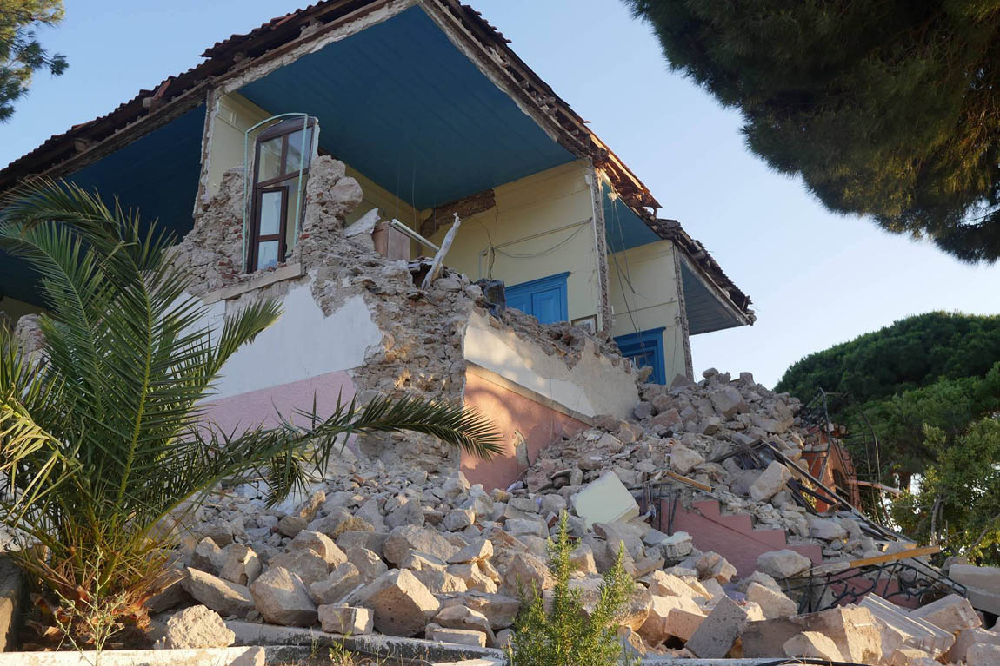
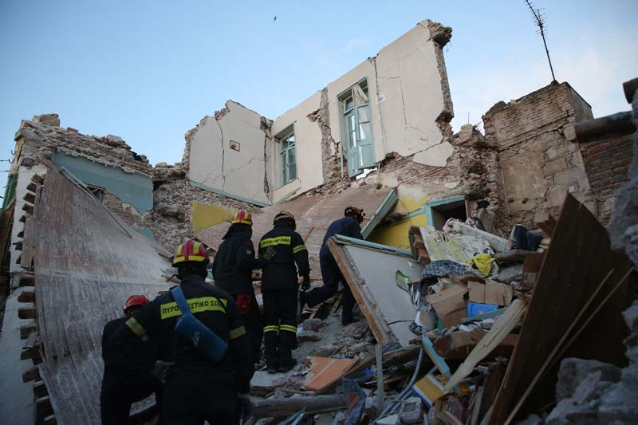

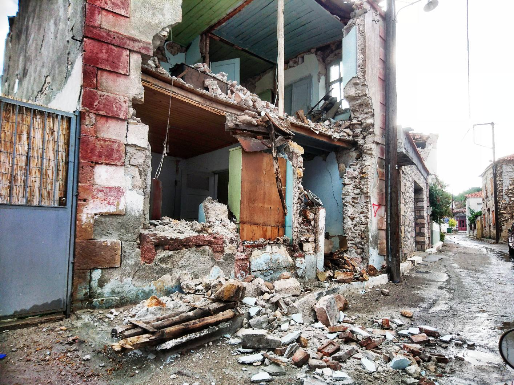
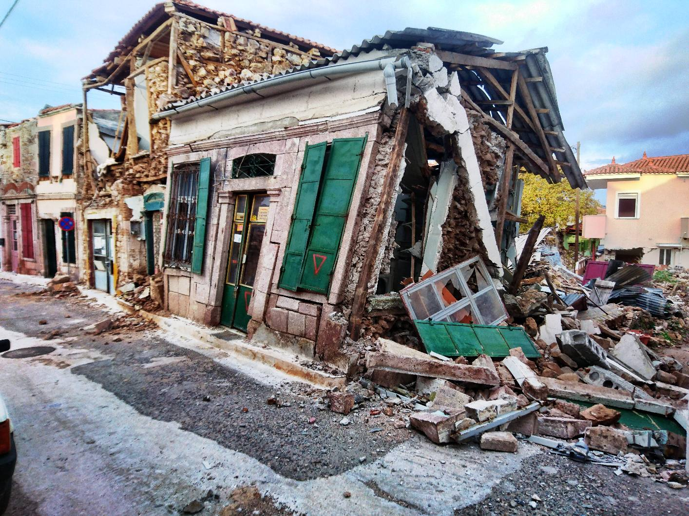
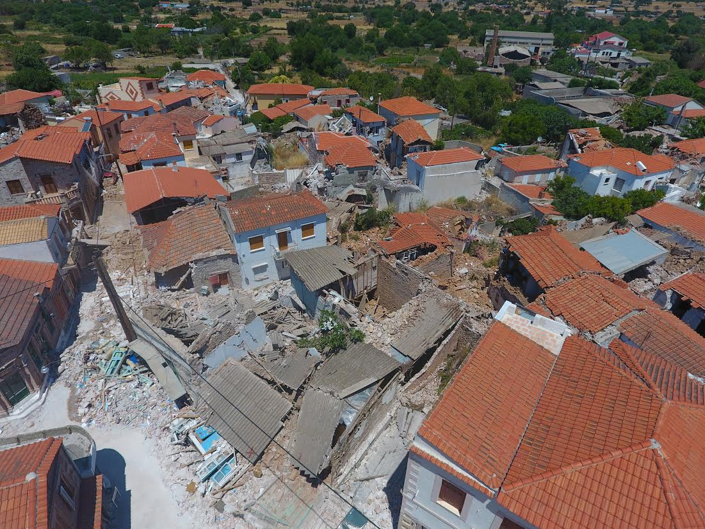
Πηγή φωτογραφικού υλικού: Σύλλογος Σεισμοπαθών Βρίσας
Αποτύπωση του κτιριακού αποθέματος της Βρίσας μετά τον μεγάλο σεισμό
Στο πλαίσιο του μαθήματος «ΓΠΣ και Χαρτογραφία στη Διαχείριση Κινδύνων», του ΔΠΜΣ «Φυσικοί Κίνδυνοι & Αντιμετώπιση Καταστροφών», δημιουργήθηκαν διαδικτυακές εφαρμογές και χάρτες για την αποτύπωση και οπτικοποίηση της πληροφορίας.
1. Βλάβες κτιρίων Βρίσας βάσει ελέγχου της ΔΑΕΦΚ
2. Κατάσταση κτιριακού αποθέματος της Βρίσας έτους 2026
3. Μεταβολές του κτιριακού αποθέματος της Βρίσας τα έτη 2025–2026
Web Map – Κτιριακές μεταβολές 2025–2026
Σύγκριση χαρτών πριν και μετά
Η σύγκριση των ορθοφωτοχαρτών 2025–2026 αποτελεί μέρος της αρχικής εφαρμογής StoryMap. Στην παρούσα έκδοση διατηρούνται οι δημόσια διαθέσιμοι διαδραστικοί χάρτες της Βρίσας.
Σημεία φωτογραφικής τεκμηρίωσης
Φωτογραφίες από επιλεγμένα σημεία του οικισμού που παρουσιάζονται στο Map Tour της αρχικής εφαρμογής.
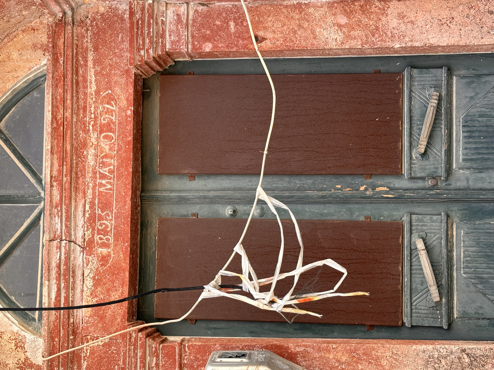
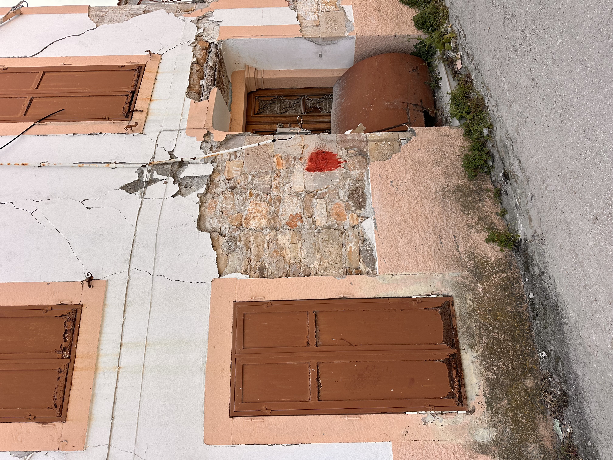
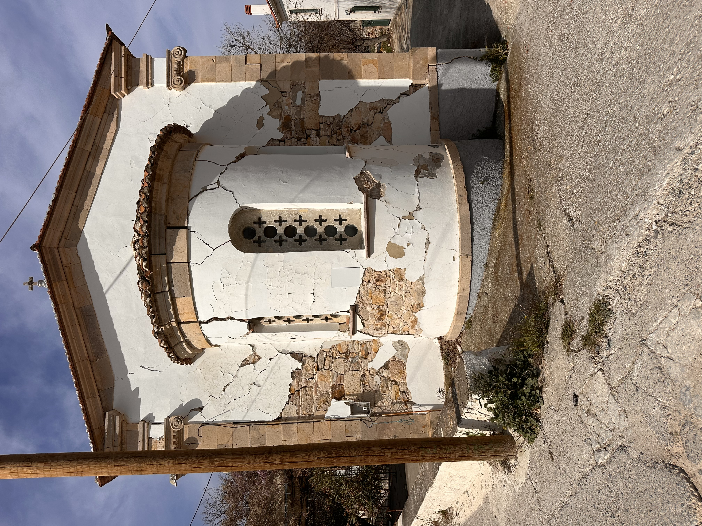
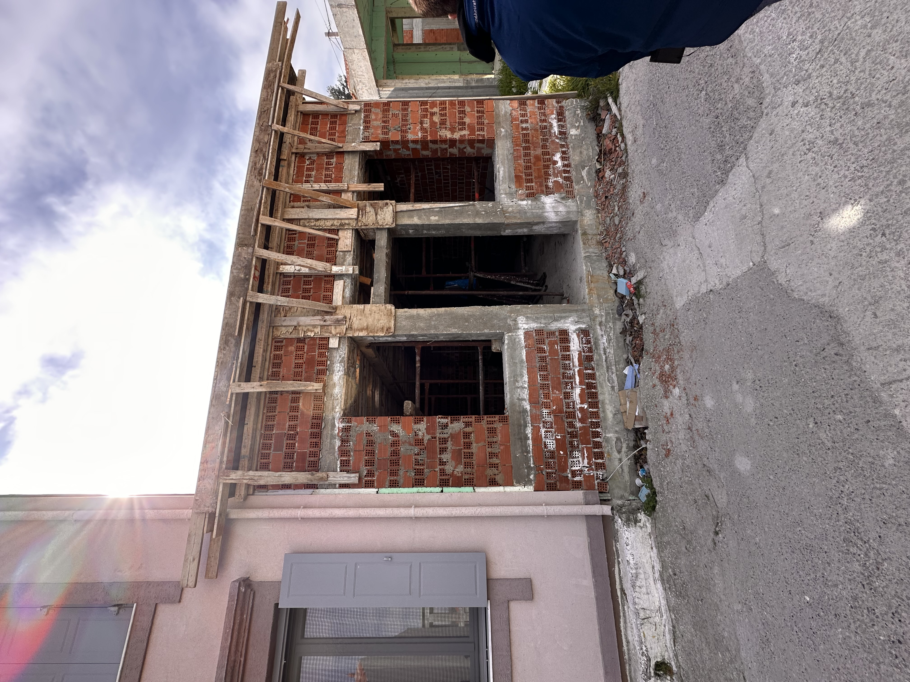
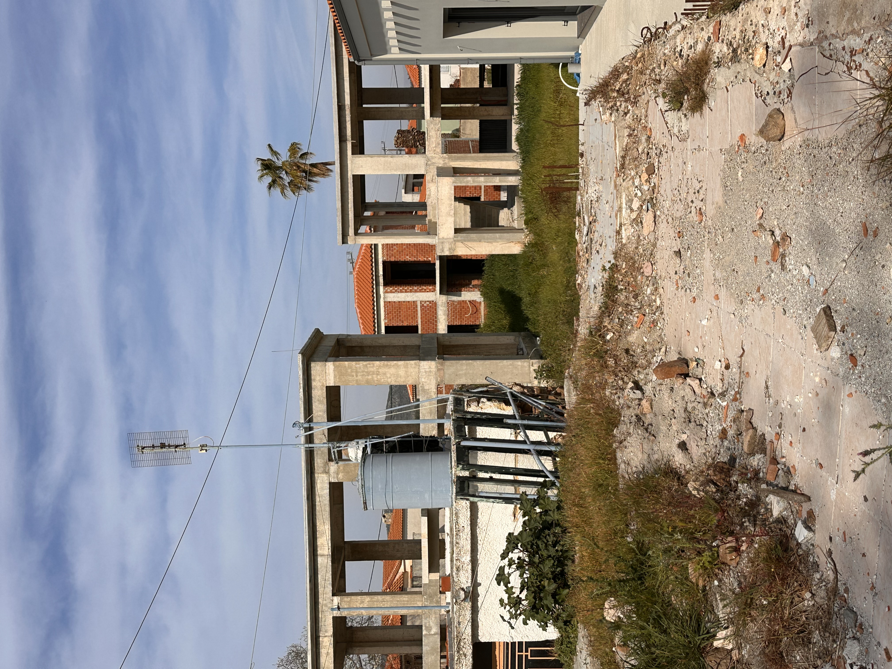
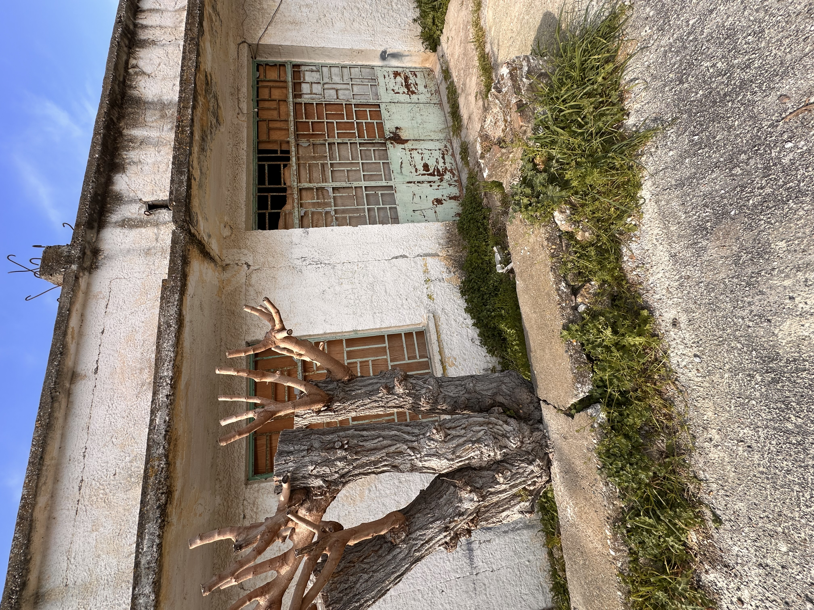
Η νέα πραγματικότητα
Ο παραδοσιακός οικισμός της Βρίσας Λέσβου υπήρξε για εκατοντάδες χρόνια σε μεγάλο βαθμό αμετάβλητος, με την διατήρηση του αριθμού των κατοίκων της σε υψηλά επίπεδα, σε σχέση με άλλους παραδοσιακούς και μη οικισμούς της Λέσβου αλλά και της υπόλοιπης χώρας.
Διατήρησε παράλληλα αναλλοίωτο τον αρχιτεκτονικό χαρακτήρα δόμησής της, με την πέτρα να παίζει κυρίαρχο ρόλο, γεγονός που συνέβαλε στον χαρακτηρισμό της ως «Παραδοσιακός Οικισμός».
Ο σεισμός της 12ης Ιουνίου 2017 άλλαξε δραματικά τον παραδοσιακό οικισμό, όπου ακόμα και σήμερα, σχεδόν εννέα χρόνια μετά, η εικόνα του να αποτελεί μια διάχυτη μελαγχολία.
Μεγάλος αριθμός μόνιμων κατοίκων αναγκάστηκε να απομακρυνθεί από τις οικίες του, ενώ ο οικισμός εξακολουθεί να διαθέτει μεγάλο αριθμό ερειπίων και κτιρίων που βρίσκονται σε διαφορετικά στάδια κατασκευής.
Τα νέα κτίρια που ανεγείρονται ακολουθούν σύγχρονες προδιαγραφές ασφάλειας, προκειμένου να είναι σε θέση να ανταποκριθούν επαρκώς σε έναν μελλοντικό ισχυρό σεισμό.
Στην πλειονότητά τους δεν κατασκευάζονται πλέον με τις παραδοσιακές πρακτικές και τεχνοτροπίες, όμως γίνεται προσπάθεια διατήρησης χαρακτηριστικών της παραδοσιακής αρχιτεκτονικής, όπως οι κεραμοσκεπές και οι κορνίζες από απομίμηση πέτρας στα παράθυρα και τις πόρτες.